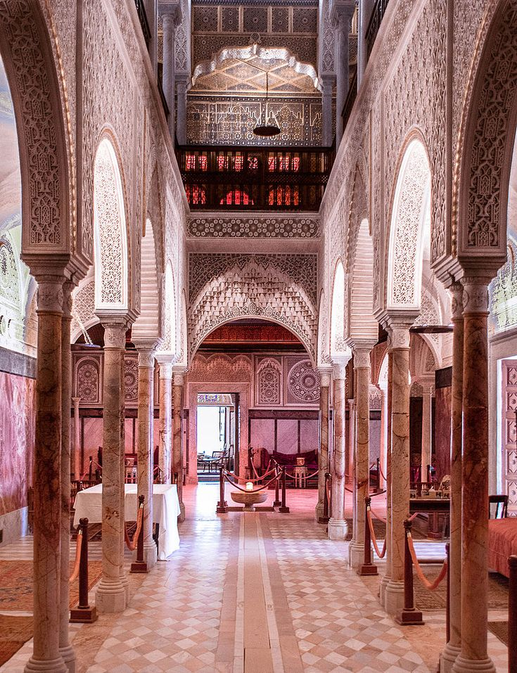

Palais du Baron d'Erlanger (Centre des Musiques Arabes et Méditerranéennes)
Situé à Sidi Bou Saïd, ce palais somptueux construit au début du XXe siècle est un chef-d'œuvre architectural mêlant styles arabe et andalou. Il abrite aujourd'hui le Centre des Musiques Arabes et Méditerranéennes et offre une vue spectaculaire sur le golfe de Tunis.